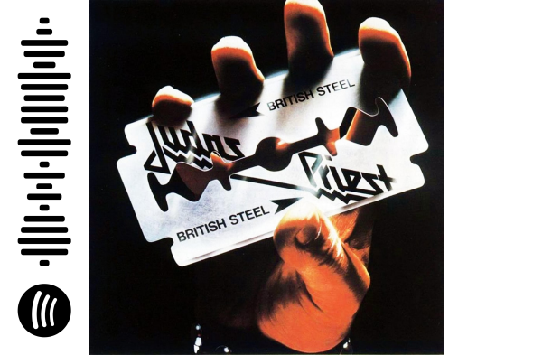

Print physical representations of your favorite streams and enrich them with a scan code linking it to your favorite streaming site.
Creates QR codes for weblinks. Links for Apple Music get redirected to iTunes. iPhone has a QR code in its camera App and for Android the ZXing App is very popular.
Spotify has its own code supported by its search bar.
Use it for your favorite music and any other kind of stream or weblink.
Samaya - Fusion Alchemist @ SoundCloud.com
Judas Priest - British Steel @ Spotify.com
Use the scan option in the searchbar of the Spotify App